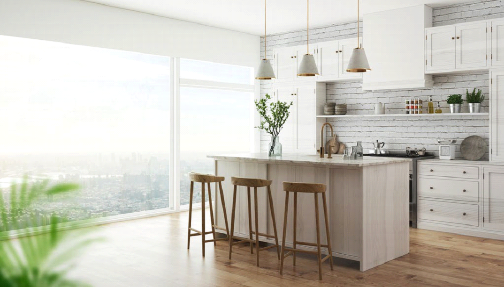
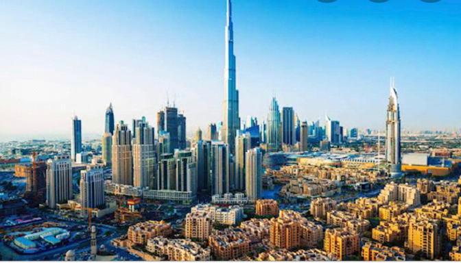
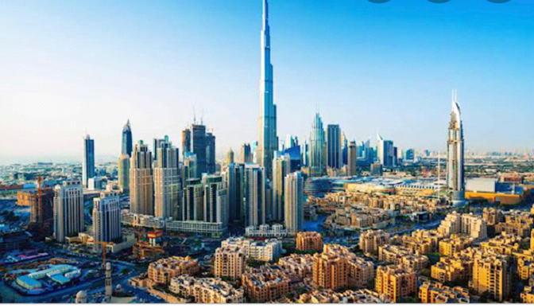

Lagos: Open and Thriving
While it is generally expressed that Lekki, the fastest growing area of Lagos, is the new Lagos, it is our opinion that Lagos State in its entirety, is the new Lagos; constantly reinventing itself to meet global standards while also working on regenerating its older neighbourhoods to arrive at a blend of lifestyles that keeps its residents satisfied. This is no easy feat with about 22 million people that call Lagos home, and we applaud the vision. Just like other global business cities, there is the need to constantly evolve to cater to the annual influx of people and Lagos is not different. Multiple real estate developments continue to spring up across the state to cater to the various income levels of its citizens.
On Lagos’ prime real estate side of, Ikoyi is one of the most expensive neighbourhoods in Nigeria with the exclusive Banana Island leading the pack as the most sought-after area to live in by wealthy Nigerians over the past year. Prices have increased significantly despite a global pandemic and we have found that exclusivity, good infrastructure and security are the major drivers. Those who can afford prme real estate are willing to invest in developments that are comparable in quality to premium locations in other global cities. This has positively impacted the wider Ikoyi neighbourhood of Onikoyi, Shoreline Estate and Old Ikoyi and further into Victoria Island and Lekki Phase 1, where rapid infrastructure upgrades have begun to match the residential and commercial prices commanded in these areas.
There is a city we have all been waiting to emerge and it is of our opinion that it has now come of age. We are now in the emergence of Eko Atlantic City. Eko Atlantic City, a free zone developed by South Energyx Development Company FZE, a subsidiary of the Nigeria-based Chagoury Group of companies. It is a planned 10 million square metres city reclaimed from the ocean and protected by an 8.5-kilometre-long sea wall. The developer has the exuberant vision of creating the most sought-after luxurious city in West Africa and after years of anticipation, it is now coming to its own.
When the Chagoury Group, who are also developers of Banana Island kicked off the demand for Banana Island, they built Ocean Parade; a multitower residential community with all the amenities local and expatriate communities could need. It marked the beginning of interest in the area and the initial buyers began to develop their properties.
The same blueprint has now been implemented by the Chagouray Group with the development of Azuri Towers, a planned 3-tower mixed use development with apartments, penthouses, villas, commercial and office spaces. They have also gone a step further by providing financing to own residential apartments through one of the largest banks in the country. We believe the development race has officially begun and landowners and investors who have been waiting for the right timing, will begin their developments within the coming years.
We agree that the Lekki corridor cannot be ignored. Development is booming in that area with multiple middle- and high-income estates springing up regularly. Our spotlight is specifically on the Lekki Free Zone which is also flourishing with interest from local and international players. It is no longer news that the Dangote refinery is near completion and should be operational by 2023. It is the first movers of the Lagos Free Zone and Alaro City that are also worthy of commendation.
Lagos Free Zone, a privately owned 700 hectares development by Tolaram Group is now home to many big names in the industrial sector. Its location opposite the Lekki deep sea port which is expected to begin operations in 2022, is a strategic decision for major stake holders that need the port. A virtual tour of the Lagos Free Zone is available here.
Alaro City, a joint venture development by the Lagos State Government and Rendeavour has also been outstanding in their ambition and fast paced development of a residential, commercial and industrial city on 1000 hectares with plans to expand into another thousand. It is also home to big industrial players and have recently launched their residential projects with the first 500 homes being built by Universal Homes. Take a tour of Alaro City here and the Universal Homes Development here.
The relevance of Lagos to Nigeria, West Africa and Africa as a whole cannot be denied. Its continuous evolution is welcomed by all as we look forward to its inspiring vision to stand with other global business cities
Jide Taiwo & Co has a mandate to sell various residential, commercial and industrial plots in the areas mentioned. To further your interest and more, Jide Taiwo & Co is available to offer our services at: premiummarkets.lag@jidetaiwoandco.com
WHAT’S NEW
INTERIOR DESIGN
Maximising spaces for a more enjoyable work and living experience
INVESTING BEYOND BORDERS
A highly skilled and professional team who have experience with global and local markets and offer a range of exclusive services.
EAREP
Tailored to understand the performance of our client properties with advisory on optimal use and maximizing rental income.
INTERIOR DESIGN
As the socially distanced lifestyle continues into 2021, focus has begun to change from frequent travel to enjoying our homes. Our homes have now evolved from living spaces to include our work and leisure needs. Jide Taiwo & Co now offers interior design services to enable new and existing clients maximise their spaces while also enjoying the comfort and style of their accommodation. This service is available to interested clients here or mail us at premiummarkets.lag@jidetaiwoandco.com
INVESTING BEYOND BORDERS
 

With close to 40 years of service in the Nigerian real estate market, we have grown with our clients through their inspirational journeys and now offer new and existing clients the opportunity to invest in properties abroad. This is a growing service that currently includes UK and DUBAI investment opportunities. We have a highly skilled and professional team who have experience with global and local markets and are pleased to offer you this service by choosing your location of choice.